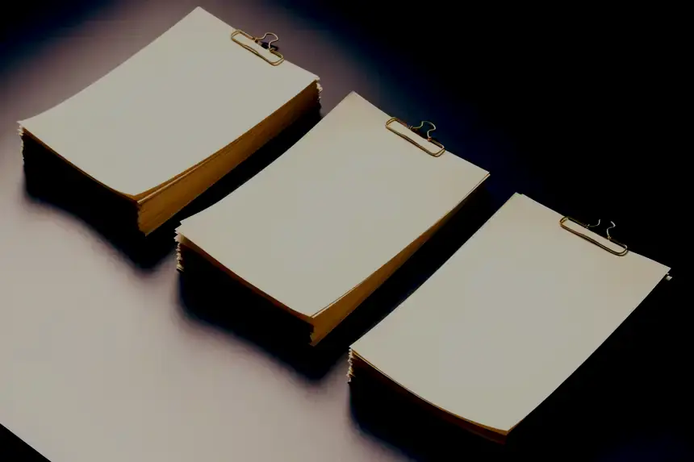
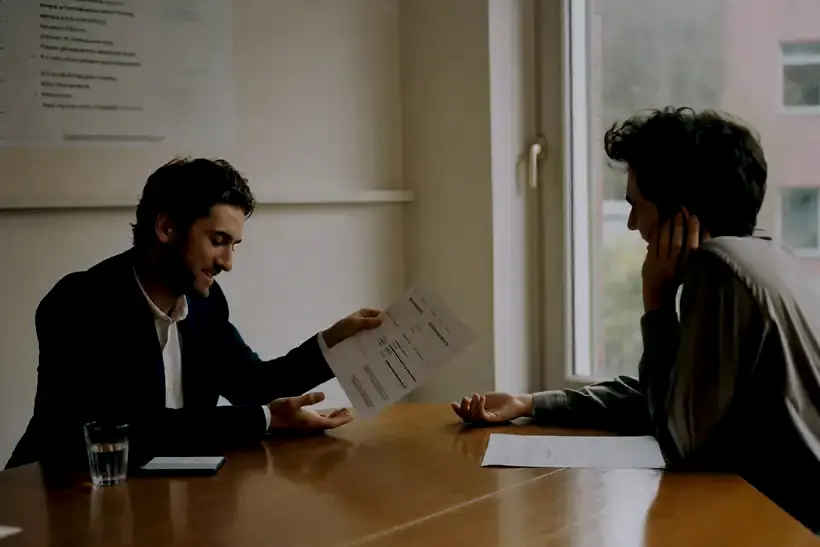

◆ Nejdřív
Podíváme se, v jakém stavu agenda je
Sejdeme se, projdeme dosavadní papíry a řekneme si na rovinu, co je potřeba srovnat. Teprve pak přijde návrh rozsahu i ceny — bez závazku a bez překvapení ve vyúčtování.

Přebíráme celou agendu — účetnictví, mzdy i jednání s úřady. Vy se staráte o firmu, my o to, aby v jejích papírech nebylo co řešit.
Objednání
První setkání je nezávazné a nic za ně neplatíte. Vyberte si den a čas, kdy se vám to hodí — pozvánku do kalendáře dostanete rovnou.
1 — Den
2 — Čas
V úterý a ve čtvrtek si vybíráte čas sami. Pondělí a středa patří objednaným klientům — označte je a ozveme se s návrhem termínu.
3 — Kontakt
Termín potvrdíme osobně, ne automatem
Hotovo
O kanceláři
Sídlíme ve Vysočanech a pracujeme pro živnostníky i zavedené společnosti. Každý klient má svého účetního — člověka, který ví, jak jeho podnikání funguje, a kterému stačí napsat jednu větu, aby věděl, o co jde.
Nejsme přepážka na příjem dokladů. Sledujeme, co se ve firmě děje, a ozveme se dřív, než se z maličkosti stane věc pro úřad.
Voláte přímo tomu, kdo vaše účetnictví skutečně vede.
Co se blíží, hlásíme dopředu — ne den před termínem.
Účetnictví, mzdy i daně bez skládání dodavatelů.
Za zpracování odpovídáme a jsme pojištěni.
Mlčenlivost bereme jako součást řemesla — obsah vašich dokladů zůstává mezi námi.
Co pro vás děláme
Rozklikněte řádek a uvidíte, co konkrétně přebíráme. Rozsah skládáme podle toho, jak velká firma je a kolik toho měsíčně proteče.
Jak to chodí
Cesta od nezávazné schůzky k měsíci, ve kterém už na účetnictví nemyslíte.
Sejdeme se, projdeme dosavadní papíry a řekneme si na rovinu, co je potřeba srovnat. Teprve pak přijde návrh rozsahu i ceny — bez závazku a bez překvapení ve vyúčtování.

Elektronicky, nebo osobně u nás ve Vysočanech. Zpracování, DPH, mzdy i dopisy úřadům vedeme my — a lhůty držíme na své straně.
Chodí vám přehled o hospodaření a upozornění na to, co se blíží. Když zvažujete investici, nábor nebo úvěr, máte komu zavolat dřív, než se rozhodnete.

Proč u nás klienti zůstávají
Podle toho jsme si nastavili, jak pracujeme. Tohle na spolupráci klienti zmiňují nejčastěji.
Účetní i daňoví poradci s praxí, která už leccos viděla. Za každou položkou stojí člověk, kterému se dá zavolat.
Nemusíte řešit nábor, školení ani zástup při nemoci. Platíte za odvedenou práci, ne za pracovní místo.
Rozsah i způsob předávání dokladů skládáme na míru tomu, jak u vás chod firmy opravdu vypadá.
Novinky v účetních a daňových pravidlech sledujeme za vás. Nová povinnost se u vás objeví včas, ne až v dopise od úřadu.
Doklady posíláte elektronicky, přehledy máte po ruce. Šanony zůstanou jen tam, kde je vyžaduje zákon.
Účetnictví, daně, mzdy i poradenství vedle sebe. Nemusíte skládat tým z několika dodavatelů a hlídat, kdo co ví.
Nevíte, co přesně potřebujete?
Pár otázek o vaší firmě. Na konci dostanete doporučení a připravený text, se kterým se rovnou objednáte.
Účetní kalendář
Vyberte měsíc. U každého termínu stojí, koho se týká a co se odevzdává — a stáhnete si ho k sobě do kalendáře, ať už jednotlivě, nebo celý rok najednou.
Novinky z Česka a EU, které se mohou dotknout vašeho účetnictví. Titulky přebíráme z veřejných zdrojů a doplňujeme krátké vysvětlení.
Přehled je orientační a vychází z pravidelných zákonných lhůt; připadne-li termín na víkend nebo svátek, posouvá se na nejbližší pracovní den. Konkrétní povinnosti se liší podle právní formy, registrace k DPH a počtu zaměstnanců — u našich klientů termíny hlídáme jmenovitě a hlásíme je s předstihem.
Než se rozhodnete
Odpovídáme na to, co obvykle rozhoduje, když firma zvažuje změnu účetní.
Domluvíme datum, převezmeme data, odsouhlasíme zůstatky a navážeme. Nejjednodušší je začátek účetního období, ale zvládneme to i uprostřed roku — jen si nejdřív potvrdíme stav účtů, aby se nic neztratilo.
Většinou elektronicky, stačí sken nebo fotka z telefonu. Komu vyhovuje osobní předání, domluví si u nás pravidelnou schůzku.
Za zpracování ručíme my a máme na to pojištění. Vůči úřadu je ze zákona odpovědný podnikatel, proto vám podklady vždy posíláme ke kontrole dřív, než cokoli odejde.
Ano, děláme to pravidelně. Nejdřív zmapujeme, co chybí, dohodneme postup — a teprve potom se pouštíme do dohledávání dokladů a oprav.
Ano. Máte svého účetního jako hlavní kontakt, takže při každém dotazu nezačínáte vysvětlovat od začátku.
Ano — fakturace, cash flow, podklady pro banku i úvaha, jestli se vyplatí zaměstnanec, nebo spolupráce na IČO. Ptejte se klidně i na věci, u kterých si nejste jistí, že patří účetní.
Kontakt
Napište telefon a pár slov o tom, co řešíte. Zavoláme v provozní době a řekneme si, jestli má přechod k nám pro vaši firmu smysl — bez prodejních řečí.
Klára odpovídá orientačně podle aktuálních pravidel a umí vás objednat. Konkrétní daňové posouzení vždy potvrdí účetní.
Než odejdete
Zanechte telefon. Ozveme se v nejbližší provozní době a řekneme si, jestli vám změna účetní dává smysl.
Konsalting Profi, Rubeška 383/4, 190 00 Praha 9 – Vysočany, IČO 25720121. Kontakt: konsaltingprofi@gmail.com, +420 773 966 787.
Zpracováváme jméno, telefon, e-mail a text, který nám sami napíšete ve formuláři nebo v okně asistentky. Slouží k tomu, abychom se vám ozvali, domluvili schůzku a odpověděli na dotaz.
U poptávek jde o oprávněný zájem na jejich vyřízení, u klientů o plnění smlouvy a o zákonné povinnosti, které účetní kancelář má. Souhlas můžete kdykoli odvolat.
Nevyřízené poptávky nejdéle dvanáct měsíců. Účetní a daňové doklady po dobu, kterou stanoví zákon.
Nikomu mimo naši kancelář. Výjimkou jsou úřady, vůči nimž máme zákonnou povinnost, a techničtí poskytovatelé (hosting, e-mail). Zpracování držíme v Evropské unii; kde to nejde, je předání kryté standardními smluvními doložkami.
Máte právo na přístup k údajům, jejich opravu i výmaz, na omezení zpracování, na námitku a na přenositelnost. Stačí napsat na konsaltingprofi@gmail.com. Stížnost můžete podat u Úřadu pro ochranu osobních údajů.
Web neprofiluje návštěvníky ani o nikom automatizovaně nerozhoduje.
Úplné znění zásad zpracování osobních údajů
Závazné je české znění. Překlady jsou informativní.
Web nesleduje návštěvníky, nemá měřicí kódy a nepředává data reklamním sítím.
Ukládáme jen vaši volbu jazyka a světlého či tmavého vzhledu. Zůstává to ve vašem prohlížeči a k nám se to nedostane. Bez toho stránka funguje stejně.
Stránky, na které odkazujeme, mají vlastní pravidla — na ty naše se už nevztahují.
Závazné je české znění. Překlady jsou informativní.
Obsah má informativní charakter a nenahrazuje daňové ani právní poradenství pro konkrétní situaci.
Vychází z pravidelných zákonných lhůt. Připadne-li termín na víkend nebo svátek, posouvá se na nejbližší pracovní den. Konkrétní povinnosti se liší podle právní formy, registrace k DPH a počtu zaměstnanců.
Odpovědi jsou orientační a slouží k rychlé navigaci. Závazné je vždy stanovisko účetního.
Objednání přes web je předběžné. Schůzku potvrzujeme telefonicky.
Závazné je české znění. Překlady jsou informativní.